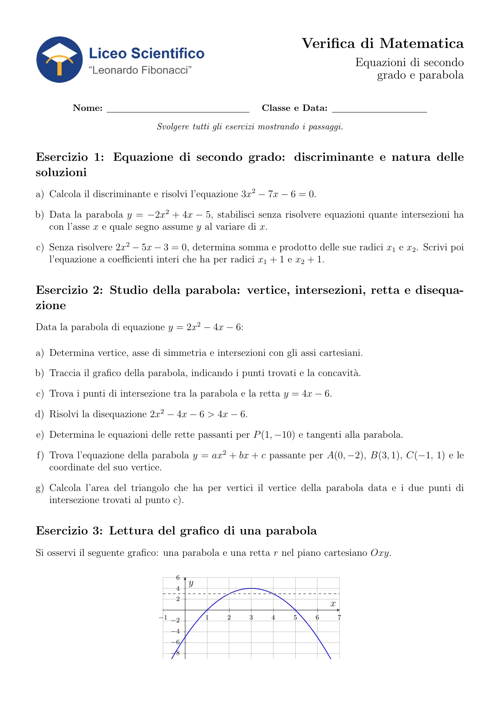
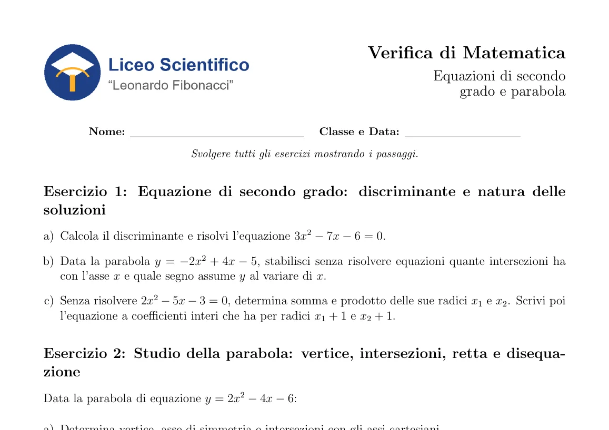
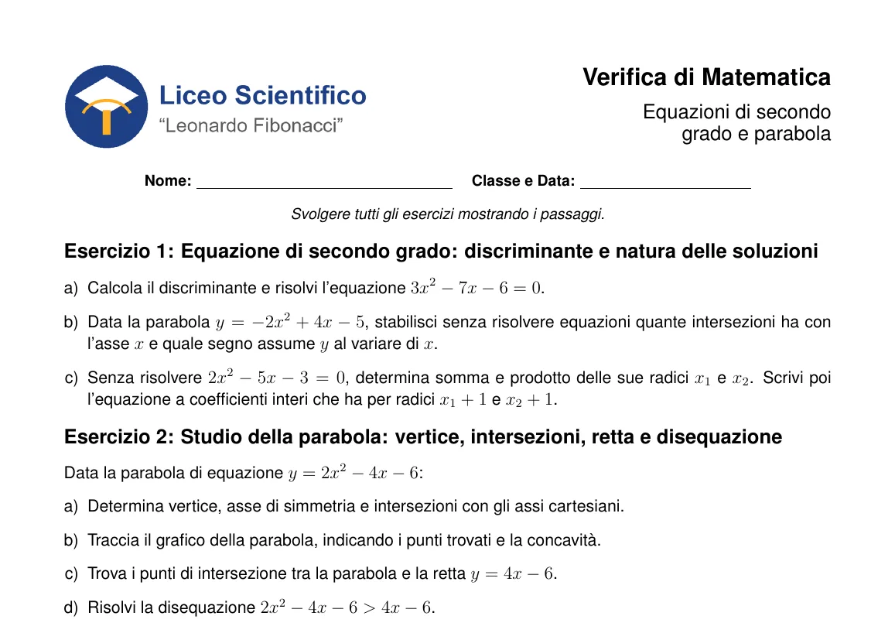
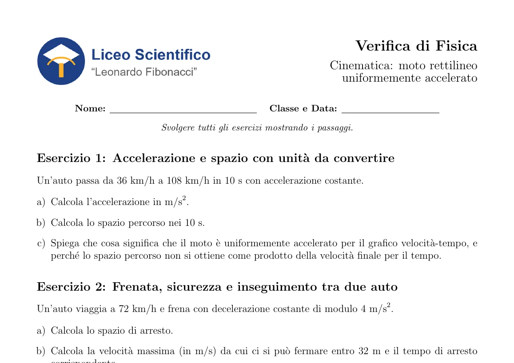
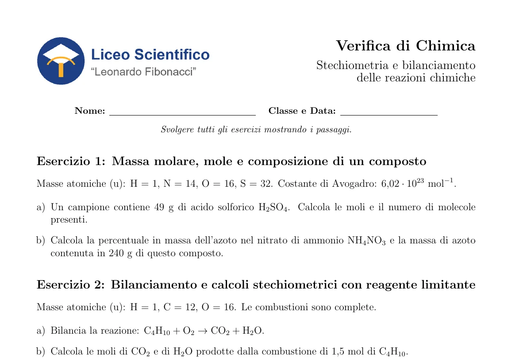
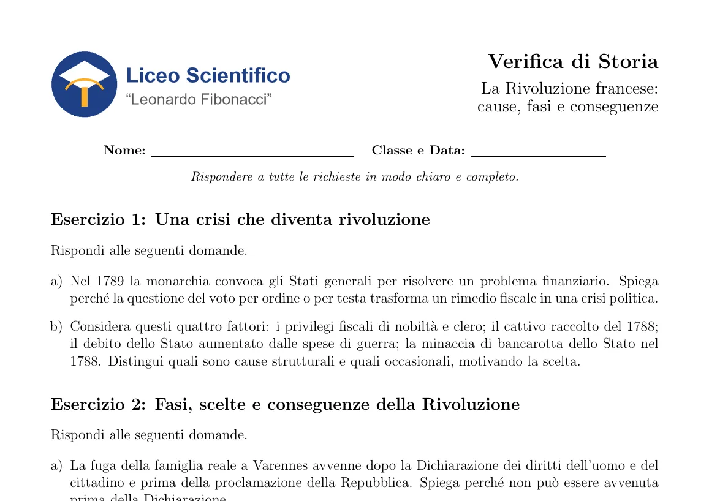
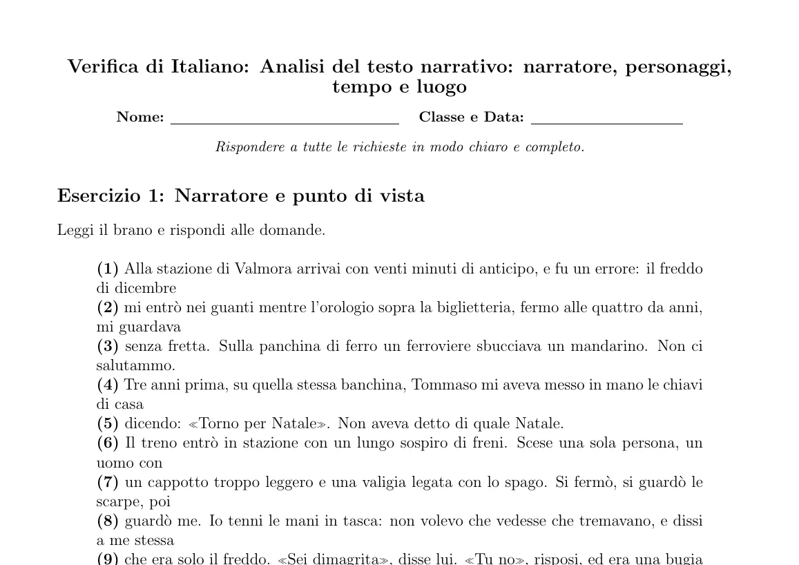

Dalla verifica fatta di corsa a quella da stampare.
Screenshot, copia e incolla, tre caratteri diversi. Caricala: VerificAI la rifa identica, impaginata bene.
Gli esercizi restano i tuoi.
Stessi testi, stessi punteggi. Cambia solo come si presenta sul foglio.
Intestazione, griglia dei punti, grafici.
Con il logo della tua scuola. Se c'è un errore nel testo, te lo segnala: la correzione la decidi tu.
Pronta in pochi minuti.
PDF o Word, con Fila B, BES/DSA e soluzioni quando ti servono.

Guarda l'app al lavoro.
Scrivi cosa ti serve come lo diresti a un collega, controlli il riepilogo, e la verifica è pronta da scaricare.
- Scrivi la richiestaArgomento, classe, quanti esercizi. Anche a voce.
- Controlla il riepilogoRitocchi ciò che non va, poi premi «Crea verifica».
- Scarica il PDFPronto per la stampa. Fila B, BES/DSA e soluzioni con un clic.
Registrazione vera dell'app. L'attesa durante la creazione è accorciata nel video.
Guarda cosa esce, così com'è.
Verifiche create da VerificAI, così come escono. Apri il PDF completo e controlla tu come sono impaginate.






Meno tempo sul foglio, più tempo per la classe.
Dalla tua verifica
Hai una verifica fatta male, magari con screenshot messi insieme? Caricala: te la rifacciamo identica, impaginata bene, con il logo della tua scuola.
Da una descrizione
Scrivi l'argomento e come la vuoi. Gli esercizi, con punteggi e grafici, li scrive VerificAI. Puoi partire anche dai tuoi appunti o da un esercizio del tuo libro, con una foto.
Correggi i compiti
Fotografa le pagine dei compiti: leggo la scrittura a mano, propongo punti e commenti e ti mostro il punto esatto dove c'è l'errore. Il voto lo decidi tu.
Poi, da qualsiasi verifica, con un clic: Fila B, versione BES/DSA, alta leggibilità, soluzioni, scheda di allenamento, Word modificabile, modifica di un singolo esercizio.
La prossima verifica, già pronta.
Prova gratisGratis durante la fase beta. Accesso con email o Google.